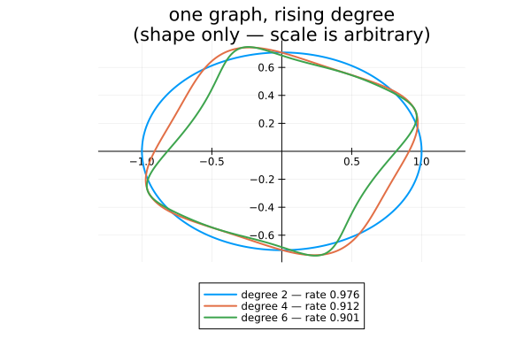
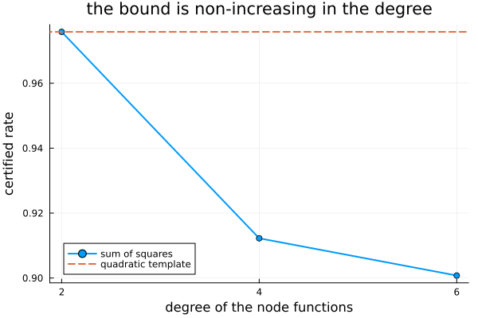
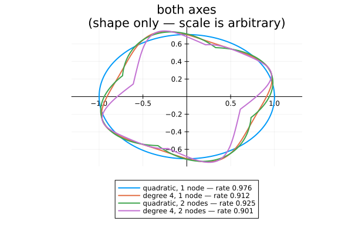

The sum-of-squares hierarchy
Raising the degree of the node functions tightens the bound, monotonically and without touching the graph ((Parrilo and Jadbabaie, 2008)). This is the template axis doing what the graph axis does in The two axes, drawn — and the two turn out to be substitutable.
import PathCompleteCertificates as PCC
import Clarabel
using SumOfSquares, DynamicPolynomials
using HybridSystems
using Plots
const OPTIMIZER = Clarabel.OptimizerClarabel.MOIwrapper.OptimizerA rotation and a shear. No quadratic function attains the joint spectral radius of this pair, which is what makes it worth going past degree 2.
A = [0.69 * [0.0 1.0; -1.0 0.0], 0.69 * [1.0 1.0; 0.0 1.0]]
problem = PCC.StabilityProblem(PCC.switched_system(A))PathCompleteCertificates.StabilityProblem{HybridSystems.HybridSystem{HybridSystems.OneStateAutomaton, MathematicalSystems.ContinuousIdentitySystem, MathematicalSystems.LinearMap{Float64, Matrix{Float64}}, HybridSystems.AutonomousSwitching, Vector{MathematicalSystems.ContinuousIdentitySystem}, Vector{MathematicalSystems.LinearMap{Float64, Matrix{Float64}}}, FillArrays.Fill{HybridSystems.AutonomousSwitching, 1, Tuple{Base.OneTo{Int64}}}}}(Hybrid System with automaton HybridSystems.OneStateAutomaton(2))One node with a self-loop per mode: the memoryless graph, so the graph axis is held fixed and only the template varies.
graph = GraphAutomaton(1)
add_transition!(graph, 1, 1, 1)
add_transition!(graph, 1, 1, 2)HybridSystems.GraphTransition{Graphs.SimpleGraphs.SimpleEdge{Int64}}(Edge 1 => 1, 2)The polynomial variables are created once and shared by every node — an edge inequality relates two node functions, so they must live in the same ring.
@polyvar x[1:2](DynamicPolynomials.Variable{DynamicPolynomials.Commutative{DynamicPolynomials.CreationOrder}, MultivariatePolynomials.Graded{MultivariatePolynomials.LexOrder}}[x₁, x₂],)The hierarchy
quadratic = PCC.jsr_bound(
PCC.QuadraticTemplate(),
graph,
problem;
optimizer = OPTIMIZER,
rtol = 1e-4,
)
certificates = map(1:3) do degree
return PCC.jsr_bound(
PCC.SumOfSquaresTemplate(degree, x),
graph,
problem;
optimizer = OPTIMIZER,
rtol = 1e-4,
)
end
[
("quadratic", quadratic.rate);
[("SOS degree $(2d)", c.rate) for (d, c) in zip(1:3, certificates)]
]4-element Vector{Tuple{String, Float64}}:
("quadratic", 0.975830078125)
("SOS degree 2", 0.975830078125)
("SOS degree 4", 0.9122314453125)
("SOS degree 6", 0.9007568359375)Degree 2 reproduces the quadratic template: a sum of squares over degree-1 monomials is $x^\top P x$ with $P \succeq 0$. Past that the bound falls.
What the certificate looks like
No level-set tracing is needed here either. Every node function is positively homogeneous of degree $d$ = rate_exponent, so the radius of $\{V \le 1\}$ in direction $u$ is exactly $V(u)^{-1/d}$ — the same three lines that drew the quadratic and polyhedral certificates.
function sublevel_boundary(certificate; samples = 721)
degree = PCC.rate_exponent(PCC.template(certificate))
angles = range(0, 2pi; length = samples)
radii = [certificate([cos(a), sin(a)])^(-1 / degree) for a in angles]
radii ./= maximum(radii)
return radii .* cos.(angles), radii .* sin.(angles)
end
shapes = plot(;
title = "one graph, rising degree\n(shape only — scale is arbitrary)",
aspect_ratio = :equal,
legend = :outerbottom,
framestyle = :origin,
)
for (degree, certificate) in zip(1:3, certificates)
xs, ys = sublevel_boundary(certificate)
plot!(
shapes,
xs,
ys;
label = "degree $(2degree) — rate $(round(certificate.rate; digits = 3))",
lw = 2,
)
end
shapes
The quadratic certificate is an ellipse and cannot be anything else. Higher degrees are free to bulge where the dynamics need room, which is where the extra tightness comes from.
Convergence
degrees = 2 .* (1:3)
rates = [c.rate for c in certificates]
plot(
degrees,
rates;
marker = :circle,
lw = 2,
label = "sum of squares",
xlabel = "degree of the node functions",
ylabel = "certified rate",
xticks = degrees,
title = "the bound is non-increasing in the degree",
)
hline!([quadratic.rate]; ls = :dash, lw = 2, label = "quadratic template")
Both axes at once
The graph axis buys the same thing, and the two compose. A De Bruijn graph of memory 1 has two nodes, so it carries two node functions and aggregates them with a minimum (common) — and that works with any template.
de_bruijn = PCC.de_bruijn(1, 2)
memory = PCC.jsr_bound(
PCC.QuadraticTemplate(),
de_bruijn,
problem;
optimizer = OPTIMIZER,
rtol = 1e-4,
)
both = PCC.jsr_bound(
PCC.SumOfSquaresTemplate(2, x),
de_bruijn,
problem;
optimizer = OPTIMIZER,
rtol = 1e-4,
)
[
("quadratic, 1 node", quadratic.rate),
("degree 4, 1 node", certificates[2].rate),
("quadratic, 2 nodes", memory.rate),
("degree 4, 2 nodes", both.rate),
]4-element Vector{Tuple{String, Float64}}:
("quadratic, 1 node", 0.975830078125)
("degree 4, 1 node", 0.9122314453125)
("quadratic, 2 nodes", 0.92462158203125)
("degree 4, 2 nodes", 0.90118408203125)Enriching the template and enriching the graph are alternative routes to the same place, and doing both is better than either.
The shapes say why. A two-node certificate is a minimum of two functions, so its sublevel set is their union — and a union of two convex bodies need not be convex. That non-convexity is what the graph buys, and it is exactly what a single function of any degree cannot do.
comparison = plot(;
title = "both axes\n(shape only — scale is arbitrary)",
aspect_ratio = :equal,
legend = :outerbottom,
framestyle = :origin,
)
for (name, certificate) in (
("quadratic, 1 node", quadratic),
("degree 4, 1 node", certificates[2]),
("quadratic, 2 nodes", memory),
("degree 4, 2 nodes", both),
)
xs, ys = sublevel_boundary(certificate)
plot!(
comparison,
xs,
ys;
label = "$name — rate $(round(certificate.rate; digits = 3))",
lw = 2,
)
end
comparison
This page was generated using Literate.jl.